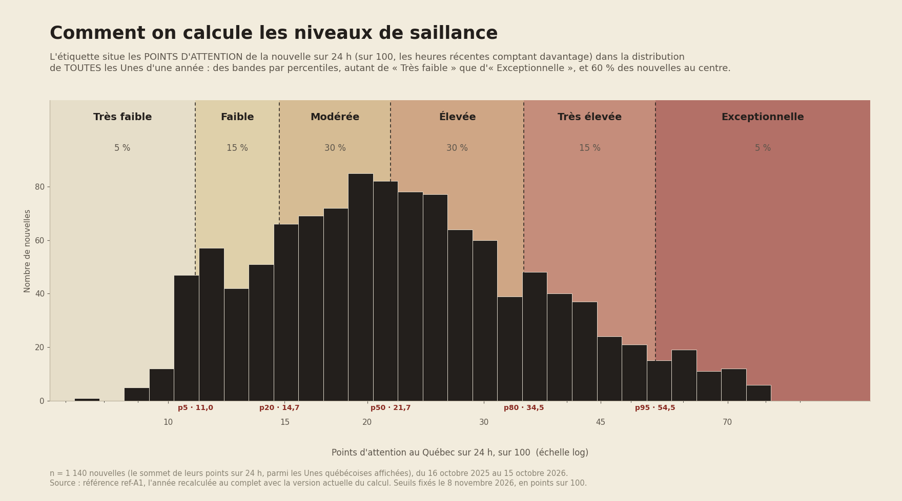

§ 03
La saillance est mesurée en blocs de quatre heures ancrés sur l'heure de Montréal (03–07h, 07–11h, 11–15h, 15–19h, 19–23h, 23–03h), qui constituent l'unité temporelle de base de l'analyse. L'ancrage sur l'heure locale plutôt que sur UTC garantit qu'un bloc reste la même tranche de journée toute l'année, y compris aux changements d'heure.
Une nouvelle peut s'imposer de trois manières différentes, et l'indice les mesure séparément avant de les combiner. Chacune est ramenée sur une échelle de 0 à 1.
| Facette | Question | Mesure |
|---|---|---|
| Visibilité | Combien de médias en ont fait leur Une? | Part des médias suivis de la région qui ont mis l'histoire en Une, en plus du premier. |
| Intensité | Chaque média y consacre-t-il un article ou plusieurs? | Nombre moyen d'articles par média couvrant l'histoire. Un même média ne compte que jusqu'à trois articles : au-delà, un site qui décline abondamment un sujet gonflerait la mesure sans que l'histoire occupe plus de place ailleurs. |
| Durée | Combien de temps est-elle restée en Une? | Temps passé en Une, rapporté au rythme habituel de chaque média : une heure sur une page frontale renouvelée en continu ne vaut pas une heure sur une page qui change deux fois par jour. |
Les trois facettes sont réunies par une moyenne géométrique, et non par une addition. La différence est de fond : une addition serait compensatoire, c'est-à-dire qu'une facette très forte pourrait masquer une facette absente. Un seul média qui laisserait un sujet toute la journée en Une obtiendrait alors un score élevé, alors qu'aucun autre média ne l'a jugé digne de sa page frontale. La moyenne géométrique refuse cette compensation : une histoire doit exister sur les trois plans à la fois pour monter, et le plus faible des trois tire l'ensemble vers le bas. Un plancher empêche toutefois qu'une facette nulle annule tout le reste.
L'indice est calculé séparément pour chaque région (les médias québécois d'un côté, les médias canadiens de l'autre), parce qu'une histoire ne se compare qu'aux Unes du même ensemble de médias. C'est ce qui permet au module « Deux solitudes? » de situer chaque camp chez lui plutôt que dans un panier commun.
Le résultat vaut entre 0 et 1; il est affiché sur 100, avec une décimale. Les deux mesures de volume, l'intensité et la durée, saturent : le troisième article d'un même média et la dixième heure en Une comptent moins que le premier article et la première heure, parce qu'au-delà d'un certain point, en faire plus n'occupe pas plus d'espace dans l'actualité. Cent correspond à un plafond théorique : tous les médias, plusieurs articles chacun, sans interruption.
Une manchette n'est pas un instantané : la nouvelle la plus forte du moment est absente de la tranche de quatre heures en cours près de quatre fois sur dix, parce qu'elle a fait sa journée plus tôt. Ce que le site affiche, ce sont donc les points d'attention sur 24 heures : la moyenne des six dernières tranches, les plus récentes comptant davantage (le poids d'une tranche diminue de moitié toutes les dix heures). Les points sont sur la même échelle que l'indice d'une tranche, de 0 à 100 : 100 points correspondraient à une nouvelle en Une de tous les médias, à plusieurs articles, sans interruption pendant 24 heures. Une nouvelle qui n'est plus en Une garde des points pendant quelques heures, puis les perd progressivement.
Un exemple réel, celui d'un sursis accordé par Washington sur des droits de douane, dans la tranche de 23h à 3h du 18 au 19 août 2026 : quatre médias québécois sur six l'avaient en Une, avec sept articles en tout, pendant l'équivalent de cinq Unes de durée normale. Visibilité 0,60, intensité 0,58, durée 0,93 : l'indice de la tranche vaut 68,8. En moyennant les six dernières tranches (20,7, 42,1, 63,8, 62,9, 73,6 et 68,8, de la plus ancienne à la plus récente) avec leur poids de récence, la nouvelle affiche 62,0 points d'attention sur 24 heures, ce qui la place dans le niveau « Exceptionnelle ».
Toutes les nouvelles présentées dans le module « La Une des Unes » ont fait la Une d'au moins un média : elles sont déjà saillantes. L'étiquette de saillance ne dit donc pas si une nouvelle est importante, mais où elle se situe parmi les autres Unes. Ce qui est classé, ce sont les points d'attention sur 24 heures décrits ci-dessus. C'est la même grandeur qui détermine l'ordre des manchettes, de sorte que le niveau affiché et le rang racontent la même chose. Ces points sont comparés à la distribution des mêmes points sur toutes les Unes d'une année, puis classés en six niveaux par percentiles symétriques.
| Niveau | Position (percentile des points d'attention 24h) | Part des Unes | À partir de (points, Unes québécoises) |
|---|---|---|---|
| Très faible | sous le 5e percentile | 5 % | moins de 11,0 |
| Faible | du 5e au 20e percentile | 15 % | 11,0 |
| Modérée | du 20e au 50e percentile | 30 % | 14,7 |
| Élevée | du 50e au 80e percentile | 30 % | 21,7 |
| Très élevée | du 80e au 95e percentile | 15 % | 34,5 |
| Exceptionnelle | au-dessus du 95e percentile | 5 % | 54,5 |
Les bandes sont symétriques : autant de « Très faible » que d'« Exceptionnelle », l'essentiel au centre. La médiane tombe entre « Modérée » et « Élevée », de sorte qu'aucune bande ne représente « la moyenne ». Les seuils sont fixes : ils sont mesurés une fois, sur une année complète de Unes, et ne bougent pas d'une mise à jour à l'autre. Ils ne suivent donc pas l'actualité récente, et c'est délibéré : une même valeur doit porter la même étiquette aujourd'hui et le mois prochain.
Cette référence porte un nom, ref-A1, et une période : du 16 octobre 2025 au 15 octobre 2026. Les Unes de cette année ont été recalculées au complet avec la version actuelle du calcul et le même panel de médias sur toute l'année : la référence décrit donc une période nommée, mesurée d'un bout à l'autre avec le même instrument. Radar+ s'appuie sur la même référence. L'indice, lui, n'en dépend pas : il est absolu par construction, et deux valeurs égales mesurent la même chose quelle que soit l'année. Seule la lentille est datée. Une année de référence porte l'actualité qu'elle contient, ici une campagne électorale québécoise, une guerre commerciale et un conflit au Moyen-Orient : c'est le prix d'un repère stable, et c'est pourquoi la référence est nommée plutôt que glissante. Elle est aussi transitoire : une fois tout l'historique recalculé, elle cédera la place à ref-2025, mesurée sur l'année civile 2025. Ce changement sera annoncé : ou bien les niveaux déjà publiés resteront rattachés à la référence sous laquelle ils ont été calculés, ou bien tout sera recalculé sous la nouvelle et ce sera dit. Jamais un mélange des deux, et jamais en silence.
Une propriété mérite d'être signalée, parce qu'elle ne vient d'aucune règle ajoutée : une histoire portée par un seul média reste très bas sur l'échelle. La facette Visibilité y est presque nulle, et comme les trois facettes se multiplient au lieu de s'additionner, aucune des deux autres ne peut compenser : ni le nombre d'articles, ni le temps passé en Une. C'est la traduction d'un principe simple : la saillance décrit une attention collective, et un média seul, aussi insistant soit-il, ne fait pas un agenda. Ce plafond est un constat de mesure et non une impossibilité : un média qui garderait seul une histoire en Une pendant près d'une journée entière peut le franchir. Sur l'année de référence, aucune nouvelle ne l'a franchi : les 21 nouvelles portées par un seul média québécois parmi les Unes affichées sont toutes restées sous la médiane, donc sous le niveau « Élevée ». Le cas s'était présenté une fois auparavant, à l'été 2025 : un dossier de fond qu'un quotidien a tenu seul en Une une vingtaine d'heures, un samedi, à l'occasion d'une commémoration. Il avait tout juste atteint le bas du niveau « Élevée » de la référence d'alors, loin des valeurs qu'atteignent les nouvelles suivies par l'ensemble des médias. La vérification est refaite à chaque nouvelle référence.
